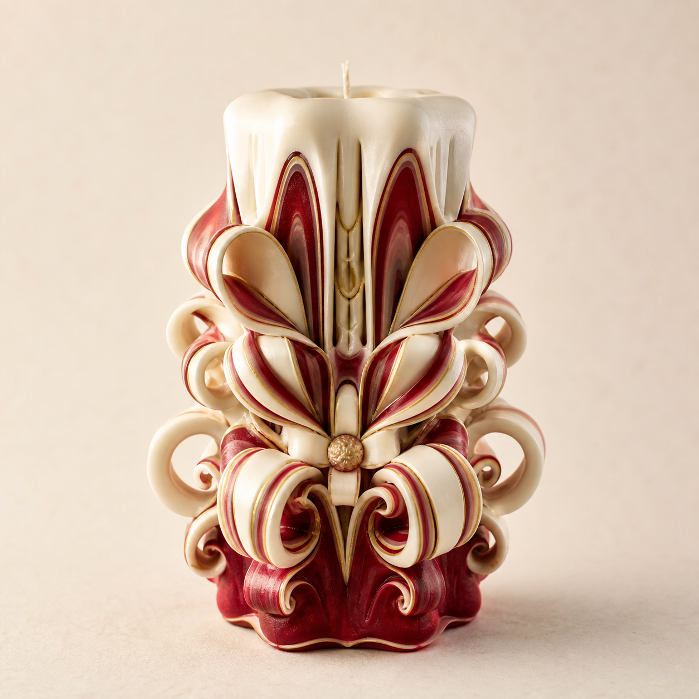

11:26
搭配顾问
色系 · 香型 · 批发CONCIERGE
把“我不确定”变成可成交的问题。
客服入口按问题分类，先收集预算、用途、色系和渠道身份，再进入人工顾问。
常见咨询
对话示例
真实功能开发前的视觉稿顾
您好，我先帮您缩小选择范围。是送礼、自己陈列，还是渠道拿样？
送生日礼物，预算 300-500，不知道选什么颜色。
顾
建议优先看莓红象牙或金蓝礼盒。前者更有仪式感，后者更温和稳妥。

顾问推荐
莓果洛可可 · 标准礼盒
适合生日、节日和重要关系赠礼。
¥328 中号起